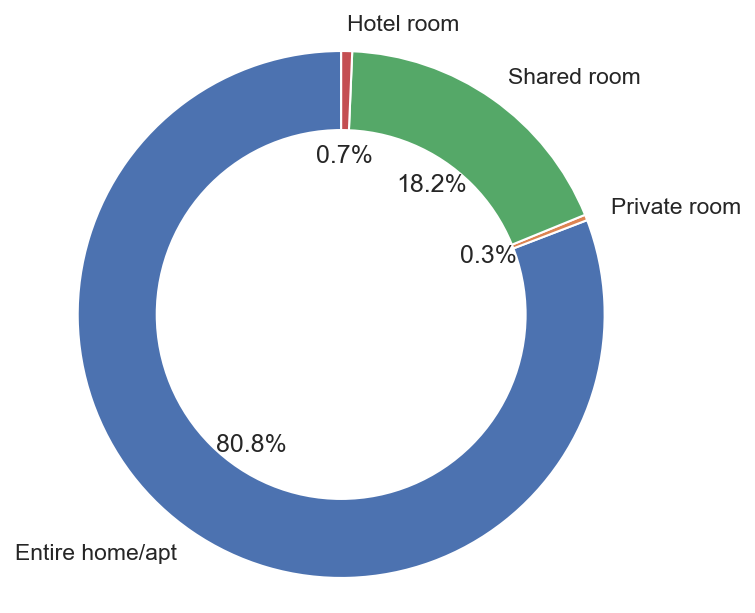

Known as the “Emerald City”, Seattle attracts thousands of tourists every year to visit. With more than 4000 listings in the city, Airbnb has interwoven with the rental landscape since its inception in 2008. In this post, I’ll be focusing on using interactive data visualization and text mining tools to explore a few key insights of the lastest Seattle Airbnb market. Given the open source Seattle Airbnb data from Inside Airbnb, I attempt to answer the following business questions from three aspects:
The analysis provided here gives a general overview of the Airbnb market in Seattle, and can also serve as a guide to the future visitors.
Data exploration
Before we dig into the answers to the above questions, let’s conduct a brief explorary data analysis to gain a sense of the primary locations, room types and accommodation of the listings in Seattle.
Locations on the map
As expected, most listings are located in the center area of the city. This map is interactive, and we can zoom-in on the clusters to eventually find the individual locations of the listings.
Room types

In Seattle, a majority of Airbnb listings is entire home/apartment. The listings for private room and hotel room are very rare.
Accommodates
 It can be seen that most listings are for 2 people.
It can be seen that most listings are for 2 people.
Location impact on Seattle Airbnb market
# load the neighbourhood information
nbh_geo = gpd.read_file('neighbourhoods.geojson', driver='GeoJSON')
# calculate the number of listings by neighbourhood
nbh_count = listings_df.groupby('neighbourhood_cleansed')['id'].nunique().reset_index()
nbh_count.rename(columns={'neighbourhood_cleansed':'neighbourhood'}, inplace=True)
nbh_geo_count = pd.merge(nbh_geo, nbh_count, on='neighbourhood', how='left')
nbh_geo_count['id'] = nbh_geo_count['id'].fillna(0).astype(int)
# calculate the percentage of listings by neighbourhood
nbh_geo_count['pct'] = nbh_geo_count['id'] / nbh_geo_count['id'].sum()
nbh_geo_count['pct_str'] = nbh_geo_count['pct'].apply(lambda x : str(round(x*100, 1)) + '%')
# create a colorbar
nbh_count_colormap = branca.colormap.linear.YlGnBu_09.scale(min(nbh_geo_count['id']), max(nbh_geo_count['id']))
nbh_locs_map = folium.Map(location=seattle_coordinates, zoom_start=11, tiles='cartodbpositron')
style_function = lambda x: {
'fillColor': nbh_count_colormap(x['properties']['id']),
'color': 'white',
'weight': 1,
'fillOpacity': 0.7
}
nbh_locsNb = folium.GeoJson(
nbh_geo_count,
style_function=style_function,
tooltip=folium.GeoJsonTooltip(
fields=['neighbourhood', 'id', 'pct_str'],
aliases=['Neighbourhood', 'Listings', 'Percentage'],
localize=True
)
).add_to(nbh_locs_map)
# add the colorbar to the map
nbh_count_colormap.add_to(nbh_locs_map)
nbh_count_colormap.caption = 'Number of listings by neighbourhood'
The spatial distribution of listings shows listings are concentrated in two areas. One is Belltown-Center Business District-Broadway neighbourhoods, which represents the downtown area. The other one is the Wallingford-University District area, which includes the campus of University of Washington (UW). Both downtown area and UW campus are attractive choices for tourists to visit.
Average daily price by neighbourhood
To compare average daily price by neighbourhood, we only select the neighbourhoods including at least 5 listings with the most common type of accommodation, which is accommodation for 2 people
It can be seen that the costliest neighbourhoods are also in the downtown area due to high demand, while the average rental prices of UW campus area are far cheaper. Other relatively expensive places, such as West Woodland and North Beach/Blue Ridge are waterfront neighbourhoods.
Advice for tourists
Availability over time
# calculate the sum of available listings by date
sum_available = calendar_df[calendar_df['available'] == 't'] \
.groupby(['date']).size().to_frame(name='available').reset_index()
# convert 'date' to 'weekday'
sum_available['date'] = pd.to_datetime(sum_available['date'])
sum_available['weekday'] = sum_available['date'].dt.day_name()
# plot the sum of available listings by date
fig = go.Figure(data=go.Scatter(x=sum_available['date'],
y=sum_available['available'],
text=sum_available['weekday']))
# set the layout
fig.update_layout(
autosize=False,
width=480,
height=360,
margin=dict(l=0, r=0, t=30, b=0),
xaxis_title = 'Date',
yaxis_title = 'Number of listings available'
)
fig.show()
It shows that there are generally more accomodations available up to three months ahead than further into next year. Part of the reason might be that hosts are more actively updating their calendars in this timeframe. Besides, due to Seattle’s rainy winter, most of people prefer to visit Seattle in summer or autumn instead.
Average daily price by date
Again, in order to compare “apples to apples” regarding the prices, we will merge the “accomodates” column from the listings data with the calendar data.
# calculate the average price of a 2-person accommodation by date
listings_df.rename(columns={'id':'listing_id'}, inplace=True)
calendar_df = pd.merge(calendar_df, listings_df[['listing_id','accommodates']], on='listing_id', how='left')
average_price = calendar_df[(calendar_df['available'] == 't') & (calendar_df['accommodates'] == 2)] \
.groupby(['date'])['price_clean'].mean().reset_index()
# convert 'date' to 'weekday'
average_price['date'] = pd.to_datetime(average_price['date'])
average_price['weekday'] = average_price['date'].dt.day_name()
# plot the average price of a 2-person accommodation by date
fig = go.Figure(data=go.Scatter(x=average_price['date'],
y=average_price['price_clean'],
text=average_price['weekday']))
# set the layout
fig.update_layout(
autosize=False,
width=480,
height=360,
margin=dict(l=0, r=0, t=30, b=0),
xaxis_title = 'Date',
yaxis_title = 'Average price of 2p accommodation'
)
fig.show()
We find that the peak of average daily price for a 2-person place occurs on September 4 next year at about $132, and the cyclical pattern is due to higher prices in weekends.
Insights for hosts
Last, we want to find out which housing properties (e.g., proximity of restaurants, shops, hygiene, safety, etc.) lead to a good rental experience, and explore some of the worst reviews. Here, we adopt a python package VADER which is a lexicon and rule-based sentiment analysis tool, to compute the polarity score of the comments.